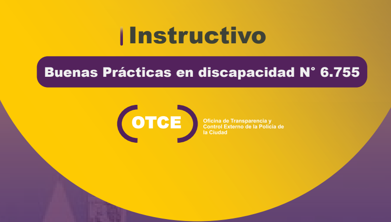

Instructivos de Capacitación sobre Leyes
Ley Micaela
Promulgada en enero de 2019 en memoria de Micaela García, establece la capacitación obligatoria en temas de género y violencia contra las mujeres para todos los empleados públicos. Su objetivo es identificar y erradicar las desigualdades de género y prevenir la violencia de género.
Ley Lucio
Inspirada en el caso de Lucio Dupuy, esta ley busca prevenir la violencia y el abuso infantil mediante la capacitación obligatoria para profesionales que trabajan con niños. Fue aprobada en abril de 2023 y también promueve la reserva de identidad para los denunciantes y campañas de concientización.
Ley Yolanda
Establece la capacitación obligatoria en temas ambientales para todos los empleados públicos, con un enfoque en desarrollo sostenible y cambio climático. Fue sancionada en noviembre de 2020 y lleva el nombre de Yolanda Ortiz, la primera secretaria de Recursos Naturales y Ambiente Humano de Argentina.

Buenas prácticas en discapacidad: Ley N° 6755
Establece la capacitación obligatoria cuyo objetivo es fortalecer la inclusión, la equidad y la accesibilidad en la gestión pública del Gobierno de la Ciudad.